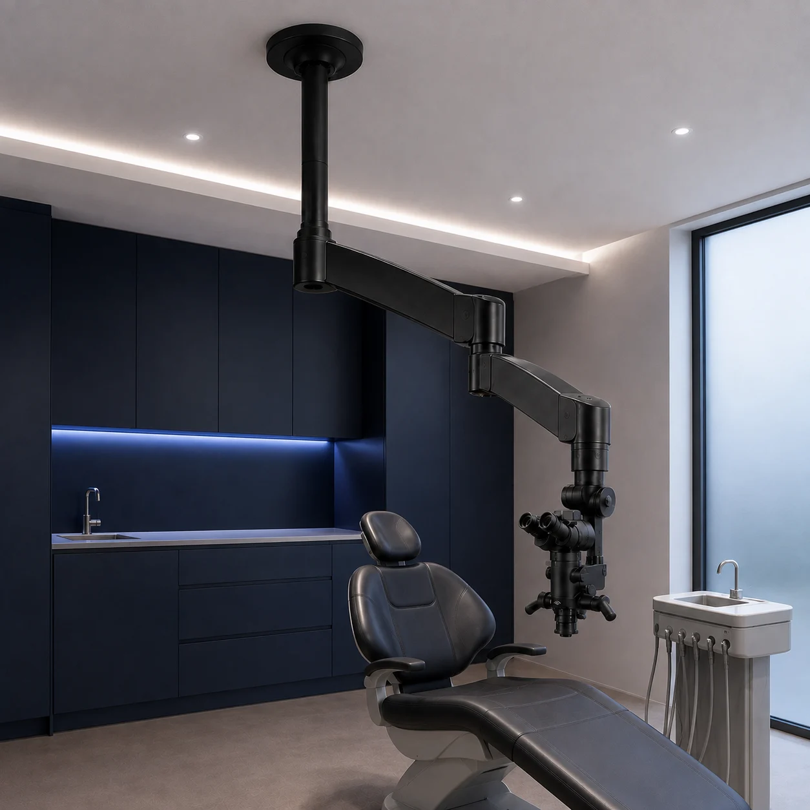
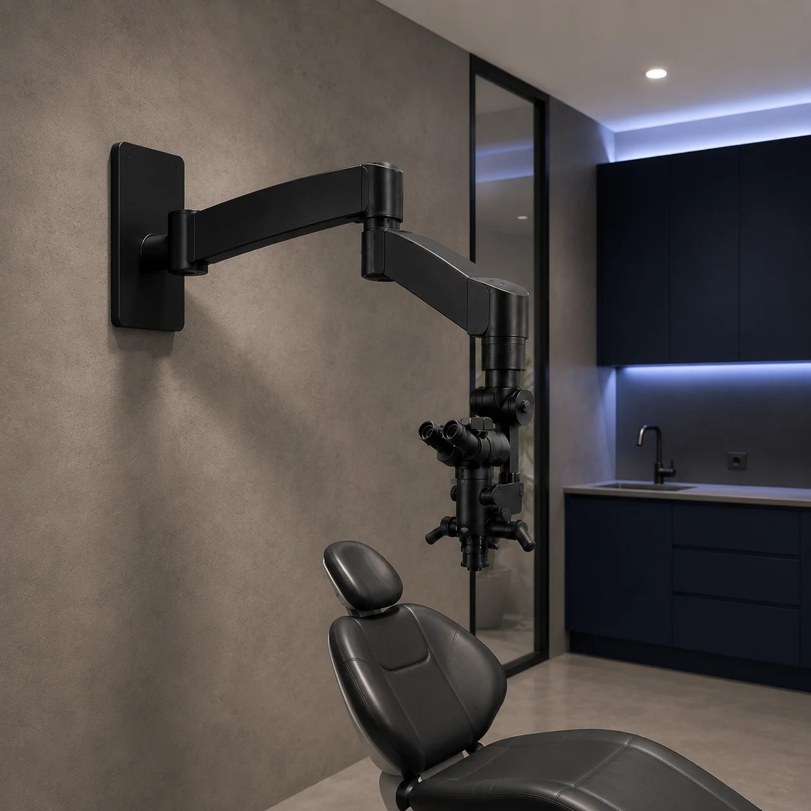

01
Потолочная система
Потолочное крепление микроскопа к несущему перекрытию или рассчитанной закладной с предусмотренным маршрутом коммуникаций.
Потолочное крепление микроскопа ↗Проектируем и изготавливаем потолочные, распорные и настенные крепления для стоматологических микроскопов. Система рассчитывается под модель микроскопа, рабочую зону врача и конструкцию помещения.

Тип крепления выбирается после обследования основания, расчёта нагрузки и анализа эргономики стоматологического кабинета.
Потолочное крепление микроскопа к несущему перекрытию или рассчитанной закладной с предусмотренным маршрутом коммуникаций.
Потолочное крепление микроскопа ↗ 02
02Распорная стойка для микроскопа устанавливается между полом и перекрытием после обследования обеих опорных поверхностей.
Распорная стойка для микроскопа ↗
03Настенный кронштейн для микроскопа с расчётом несущего основания, необходимого вылета и рабочей зоны врача.
Настенное крепление микроскопа ↗Способ монтажа выбирают не только по свободному месту. Инженер сопоставляет конструкцию пола, стены и перекрытия с положением кресла, рабочей траекторией микроскопа и возможностью проложить коммуникации.
Освобождает пол и размещает подвес над рабочей зоной. Требует доступного несущего перекрытия или индивидуально рассчитанной закладной под микроскоп.
Формирует отдельную вертикальную опору между полом и потолком. Применимость определяется после проверки двух оснований и геометрии кабинета.
Не занимает площадь пола и позволяет предусмотреть парковочное положение у стены. Основание и вылет кронштейна рассчитываются под конкретный микроскоп.
До изготовления определяем способ установки, выполняем расчёт нагрузки на перекрытие, стену или распорную конструкцию и согласуем положение микроскопа. Грузоподъёмность, вылет и закладная под стоматологический микроскоп рассчитываются индивидуально под модель микроскопа и помещение.

Монтаж оборудования в стоматологической клинике начинается с проверки исходных данных.
Изучаем помещение, основание, потолок и рабочий сценарий.
Рассчитываем конструкцию и согласуем положение оборудования.
Производим крепление для выбранной модели микроскопа.
Устанавливаем систему и проверяем её в рабочей зоне.
Укажите систему и микроскоп. Инженер уточнит конструкцию помещения и исходные данные для проектирования.
Телефон+7 (495) 222-01-35Почтаcastorsteel@mail.ru